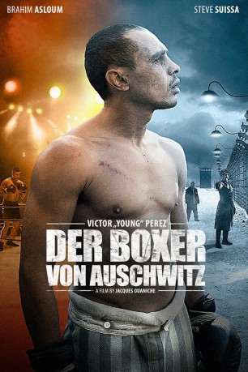

#6200 Der Boxer von Auschwitz
Alternativ: Victor Young Perez
 
 IMDB-Wertung: 6.3 / 10
IMDB-Wertung: 6.3 / 10  Metascore: 0
Metascore: 0 
Paris in den 1930er Jahren: Der aus Tunesien stammende jüdische Boxer Victor “Young” Perez gewinnt für Frankreich den Titel des Boxweltmeisters und damit die Gunst der französischen Schauspielerin Mireille Balin. Doch Victors Ruhm und sein Glück mit Mireille sind von kurzer Dauer: Nach einer Reihe verlorener Kämpfe und mit schwindender Popularität, verliert die erfolgreiche Aktrice schnell das Interesse an ihm.\r Über Europa bricht währenddessen der Zweite Weltkrieg herein, die französische Hauptstadt ist besetzt. Victor und sein Bruder Benjamin werden wegen ihres jüdischen Familienhintergrundes von den Nationalsozialisten ins Konzentrationslager Auschwitz deportiert. Körperlich am Ende seiner Kräfte, muss “Young” Perez dort unter unfairen Bedingungen zur Unterhaltung des Lagerkommandanten boxen. Voller Entschlossenheit und Würde kämpfen er und sein Bruder ums reine Überleben.
Jahr: 2013
Dauer: 109 Minuten
FSK: 12
Land: Frankreich Studio: Lighthouse Home EntertainmentTonspuren:
Untertitel:
Auflösung: 720p (1280x536) Größe: 3092 MB
Genre: Drama, Sport, Geschichte, Biographie
Regisseur: Jacques Ouaniche
Drehbuch: Whit Stillman
Soundtrack:
Darsteller:
- Isabella Orsini als Mireille Balin
- Patrick Bouchitey als Léon Bellières
- Bruce Payne als Commandant Heinrich Schwarz
 Alaa Safi als Battling Mokhtar
Alaa Safi als Battling Mokhtar- Albert Iluz als Jo Baranes
- Evelin Hagoel als La mère de Victor
- Shahir Kabaha als Rachid
- Hristo Dimitrov als Soldat allemand accompagnant Victor
- Brahim Asloum als Victor 'Young' Perez
- Steve Suissa als Benjamin Perez
- Davy Sardou als Maxo
- Pierre Henri Toubas als Brown
- Romain Canonne als Marcel
- Roma als Weiss
- Colin Deleau als Kurtz
- Dan Herzberg als Aldo Pullicino
- Médéric Ory als Jeannot
- Hanna Melzer als Prostituée
- Vik Salton als Prostituée
- Shani Carpman als Prostituée
- Franck Michaud als Directeur du stade
- Thierry Morel als Commentateur sportif Paris
- David Shabat als Commentateur radio match de Manchester
- Louis Kemon als Patron du cabaret
- Emil Penyashki als Notable du cabaret
- Lubomir Kovatchev als Agent de Mireille
- Sava Dragunchev als Présentateur salle de cinéma
- Antoni Petorozliev als Ministre
- Lubie als Tanneur
- Desislava Kondova als Jolie fille avec le chien
- Dimitrina Velinova als Jolie fille avec le chien
- Yoanna Boukovska als Docteur Goldstein
- Yoram Ron als Homme vestiaire match de Berlin
- Denis Sandler als Organisateur match de Berlin
- Todor Baschianov als Chauffeur de taxi
- Vladimir Kolev als S.A. pharmacie Berlin
- Iroslav Petkov als Milicien pharmacie Berlin
- Nikolai Iliev als Officier allemand du restaurant
- Dimiter Martinov als Joseph
- Kamen Ivanov als Officier allemand du camp
- Georgi Manchev als Kapo abattu par l'officier du camp
- Milen Kaleichev als Kapo
- Krasimir Goreslki als Médecin du camp
- Panayot Tzanev als Infirmier du camp
- Petko Kamenov als Soldat bureau Lagerkommandant
- Desislava Oronova als Femme du Lagerkommandant
- Katerina Savova als Fille du Lagerkommandant
- David Tipov als Fils du Lagerkommandant
- Jean-Dominique Chouchan als Présentateur du 1er championnat du monde
- Patrick Roques als M. Maurice
Datei: X:\2013(A-F)\Boxer von Auschwitz, Der (2013, FSK12, 1280x536).mkv seit 12.05.2017
Festplatte: HD 2012(N-Z)-2013(A-H)
 Es gibt insgesamt 127 Filme in der Gruppe '2013(A-F)'
Es gibt insgesamt 127 Filme in der Gruppe '2013(A-F)'